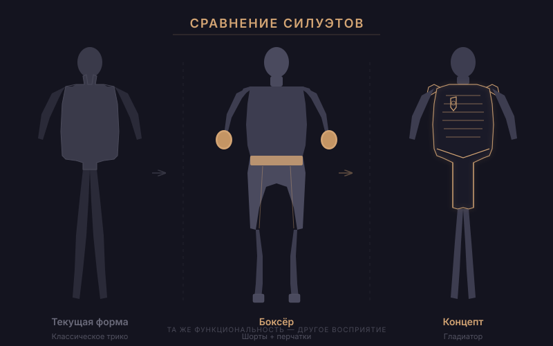
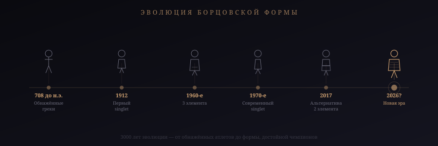
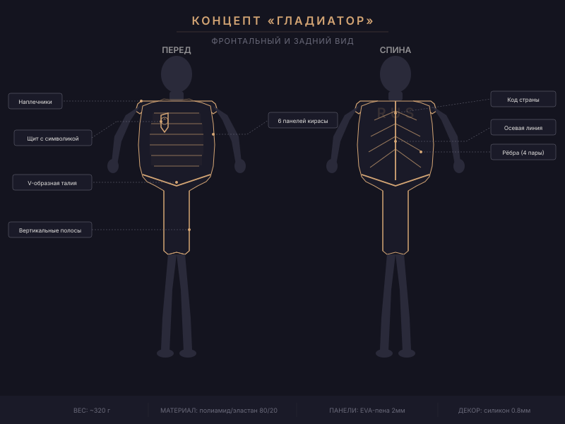
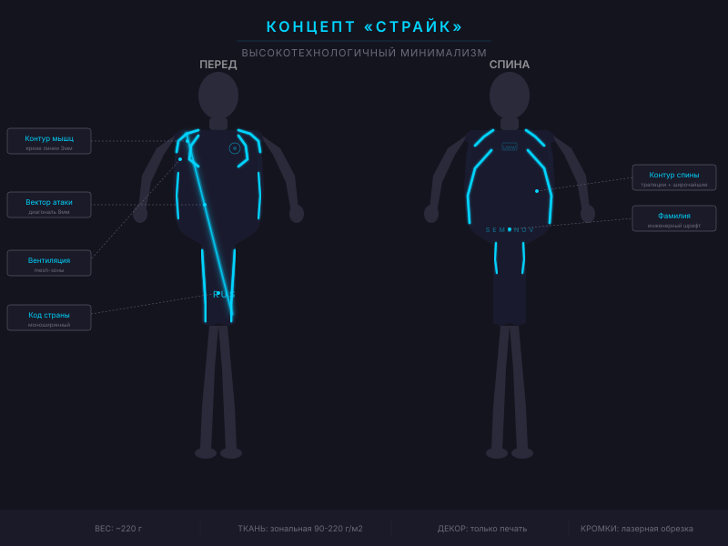
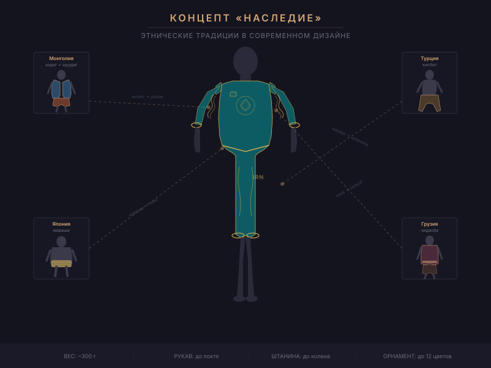

Борец вольного стиля весом 74 килограмма способен поднять и бросить через себя человека собственного веса за доли секунды. Его тело — это машина из стальных связок, взрывной мускулатуры и десятилетий тренировок. Чемпион мира по борьбе — один из самых функционально сильных людей на планете. Он проводит на ковре шесть минут, которые по интенсивности сопоставимы с десятикилометровым забегом с рюкзаком. Его пульс в схватке достигает 190 ударов в минуту.
А теперь посмотрите, как он выглядит.
Тонкий обтягивающий комбинезон — singlet — превращает элитного атлета в фигуру, вызывающую скорее неловкость, чем трепет. Трико обнажает всё, что зритель не просил видеть, и при этом не подчёркивает ничего из того, что делает борца устрашающим. Ни ширину спины, ни рельеф плеч, ни мощь ног.
Это не статья-жалоба. Это проект. Мы разберём, почему форма борцов стала такой, какие ограничения нельзя нарушить, и предложим четыре концепта новой экипировки — функциональной, безопасной и наконец-то достойной людей, которые в ней выступают.
Проблема: борьба проигрывает борьбу за зрителя
Парадокс восприятия
Боксёр выходит на ринг в атласных шортах до колена с широким поясом, часто — в именном халате. Силуэт чёткий, узнаваемый, театральный. Шорты скрывают бёдра и подчёркивают торс. Каждый выход — шоу.
Боец UFC носит шорты свободного кроя с агрессивным дизайном. Верхняя часть тела открыта — зритель видит мышцы, татуировки, шрамы. Всё создаёт нарратив бойца.
А борец? Борец выходит в том, что визуально неотличимо от купальника.

Одноцветное трико, которое в лучшем случае имеет пару полосок. Даже олимпийский чемпион в этом наряде выглядит как участник школьных соревнований. Два человека в обтягивающих комбинезонах сливаются друг с другом на ковре. Зритель не может мгновенно считать, кто есть кто.
Между 2011 и 2016 годами количество борцов в старших школах США упало на 7,9%. Одна из причин — молодые атлеты стесняются надевать singlet. Тренер Дэнни Стак: «Мы вербуем 118-килограммовых футболистов для борьбы, и они надевают трико в первый раз... и не хотят продолжать.»
Международная федерация борьбы (UWW) это понимает. Поэтому уже вводились изменения: обязательные разные цвета для соперников, эксперименты с дизайном. Но всё оставалось косметическим — меняли узор на трико, не меняя сам подход.
Как мы дошли до лосин с флагами
Обнажённые греки и идеал калокагатии
В 708 году до н.э. борьба стала первым негоночным видом спорта в программе Олимпийских игр. Борцы выступали полностью обнажёнными. Само слово «гимнасий» происходит от греческого gymnos — «обнажённый».
Перед схваткой атлеты натирали тела оливковым маслом, затем посыпали тонким порошком. Обнажённость подчёркивала равенство, а идеально вылепленное тело было воплощением калокагатии — идеала, связывающего физическую красоту с моральным совершенством.
Для греков борец должен был выглядеть величественно. Его тело было его презентацией. Куда делась эта философия?
От трусов до трико: хронология

1912, Стокгольм — singlet впервые появляется на Олимпиаде. До этого борцы выступали в обтягивающих футболках и шортах.
1960-е — NCAA обязала носить трёхкомпонентную форму: безрукавка с длинными полами, полноразмерное трико и облегающие шорты поверх. Три слоя ткани на одном борце.
Конец 1960-х — цельный singlet получает одобрение и становится стандартом на следующие пятьдесят лет.
1980-е — минимализм достигает предела. Трико напоминает «короткие шорты с подтяжками».
2017 — поворотный момент. NFHS одобряет двухкомпонентную альтернативу: компрессионные шорты + рубашка. Причина прямая: молодёжь отказывается надевать singlet.
Форма, которую стесняются надевать, — это форма, которая проиграла. Не функционально, а идеологически.
Правила игры: что нельзя нарушить
Прежде чем проектировать, зафиксируем нерушимые ограничения. Любой концепт, нарушающий хотя бы одно — фантазия, а не проект.
1. Невозможность захвата за ткань
Главный закон. В вольной и греко-римской борьбе запрещено хватать за одежду. Значит: никакой свободной ткани, никаких элементов, за которые можно зацепиться.
Решение: допустимы накладные панели, если они термически приварены к основе и не образуют зазора. Толщина — не более 3 мм. Край — оплавлен.
2. Полная свобода движений
Борец выполняет движения, недоступные большинству людей: глубокий присед с разведёнными коленями, борцовский мост, подъём соперника с полной амплитудой, скручивания на 180°.
Решение: растяжение ткани не менее 40% в четырёх направлениях. Все швы — плоские или бесшовные. Декоративные элементы — только в зонах минимальной деформации.
3. Материал не скользкий
UWW запрещает всё, что делает захват скользким.
Решение: текстурированный полиэстер с микрорельефом. Никаких глянцевых поверхностей. Сублимационная печать вместо шелкографии.
4. Минимальный вес
Борцы сгоняют вес до последнего грамма. Разница между категориями может составлять 50–100 граммов. Текущий singlet весит 150–250 г.
Решение: целевой вес — не более 350 г. Каждый элемент обоснован.
5. Безопасность
Никаких жёстких элементов, острых краёв, металла. Ничего, что может травмировать при силовом контакте.
Мы не предлагаем нарушить правила. Мы предлагаем максимально использовать пространство внутри них.
Концепт I: «Гладиатор»
Борьба — старейший вид спорта. Этот концепт обращается к архетипу воина, для которого тело и есть оружие.

Базовая конструкция — модифицированный singlet, но с двумя ключевыми изменениями. Лямки расширены с 3–4 см до 12–15 см — по сути, наплечники, слитые с основой. Нижний край — не пах, а середина бедра.
Главная деталь — рельефные панели на груди и спине, имитирующие сегментированный доспех. Панели выполнены из той же ткани с подложкой из EVA-пены толщиной 2 мм. Термически приварены — зацепиться невозможно.
На спине — вертикальная осевая линия, стилизованный «позвоночник доспеха», от которого расходятся диагональные рёбра, повторяющие рисунок широчайших мышц.
Основа: полиамид + эластан (80/20), 190 г/м². Панели: двуслойная конструкция, EVA-пена 2 мм. Соединение: ультразвуковая сварка. Декор: сублимация + силиконовый 3D-принт 0,8 мм. Вес: ~320 г.
Палитра и национальные символы
Основа — тёмная: матовый чёрный, глубокий бронзовый, бордовый. Панели — на полтона светлее, что при освещении создаёт эффект «доспеха, поймавшего свет».
Герб страны — на левой стороне груди, внутри стилизованного щита из силиконового 3D-принта. Код страны крупно на спине — стилизован под чеканные буквы. Национальный орнамент — тонкие линии по краям панелей.
Как это выглядит в движении
При напряжении мышц панели слегка расходятся, обнажая тёмные зазоры — визуальный эффект «живого доспеха». При борцовском мосте панели на спине сжимаются, создавая рисунок чешуи. На телекартинке форма выглядит как облегчённый бронежилет — собранно, мощно, устрашающе.
Концепт II: «Страйк»
Борец — не средневековый воин, а современная боевая машина. Этот концепт вдохновлён эстетикой Формулы-1.

Здесь нет накладных панелей. Весь визуальный эффект — за счёт контрастных зон компрессии и графических линий.
Зоны высокой компрессии (грудь, дельтоиды, квадрицепсы) — плотная ткань 220 г/м² с микрорёбрами, которые визуально «вырезают» мышечные группы. Зоны вентиляции (подмышки, пах) — тонкая сетка.
Главный приём — диагональная линия от левого плеча к правому бедру. «Вектор атаки», создающий динамичный асимметричный силуэт. Линия не нарисована — она создана контрастом текстур.
Плотные зоны: полиэстер-эластан, 220 г/м², текстура «микроканалы». Лёгкие зоны: полиамидная сетка, 90 г/м². Соединение: бесшовная вязка или ультразвуковая сварка. Кромки: лазерная обрезка. Вес: ~220 г — самый лёгкий из четырёх концептов.
Телевизионный эффект
Микроканалы ловят свет при движении, создавая муаровый эффект — форма мерцает на камеру. Акцентные линии работают как трассеры: глаз зрителя отслеживает яркую линию на тёмном фоне.
В партере, когда борцы сплетены, контуры позволяют мгновенно различить, где чья рука и нога. Это решает критичную проблему текущей формы.
На телекартинке борец выглядит как персонаж из научно-фантастического фильма — подсвеченный контур тела, мгновенно читаемый на любом расстоянии.
Концепт III: «Наследие»
Борьба глубоко укоренена в национальных культурах. Турецкий яглы гюреш, иранский кошти, монгольский бух, грузинская чидаоба — у каждого народа своя традиция.

Силуэт — двухкомпонентная система: облегающий топ с рукавом до локтя и шорты-леггинсы до колена. Это единый комбинезон, визуально разделённый контрастной линией на поясе. Длинный рукав даёт больше пространства для графики, длина до колена — больше «холста» на ногах.
Такой силуэт ближе к рашгарду грэпплеров и визуально напоминает традиционные борцовские костюмы — монгольское зодог, турецкие кисбет, грузинскую чоху.
Уникальный дизайн для каждой сборной
Иран: персидские арабески, бирюзово-золотая гамма, шамсе (солнечный символ) на груди.
Грузия: виноградная лоза и кресты, бордово-белая палитра из чоха.
Монголия: «вечное плетение» (улзий), красно-синяя палитра, стилизованное соёмбо.
Турция: геометрические тюркские узоры из килимов, красно-белая основа, полумесяц.
Россия: хохломские растительные мотивы или гжельские узоры, красно-синяя палитра.
США: индейские геометрические паттерны навахо, звёздно-полосатые элементы в графическом стиле.
Монгольский борцовский костюм — зодог (жилет с открытой грудью) и шуудаг (тугие шорты) — носится по легенде потому, что однажды чемпионом оказалась женщина, и открытая грудь стала доказательством мужского пола борца. Миф или нет, но он иллюстрирует, насколько борьба переплетена с культурной идентичностью.
Концепт IV: «Элита»
Этот концепт берёт эстетику премиальных спортивных брендов и доводит её до уровня, достойного мировых чемпионов.
«Элита» — самый коммерчески реалистичный из четырёх. Это не революция, а эволюция. Тот же singlet, но переосмысленный через призму Nike, Adidas и Under Armour — компаний, которые десятилетиями совершенствуют спортивную эстетику.
Ключевые изменения
Расширенные лямки (8–10 см) с градиентным переходом в основу — визуально шире плечи.
Контрастная зональная компрессия — матовые зоны на мышцах, глянцевые между ними. Создаёт рельеф без накладных элементов.
Именная зона на спине — стильная типографика фамилии и флага, как на джерси баскетболистов.
Умный цвет: основной тон тёмный (антрацит или navy), а обязательный красный/синий — крупными графическими блоками вместо заливки всей формы.
Вес: ~250 г — почти как текущий singlet. Ориентировочная цена: $60–80 (сопоставимо с текущими). Срок внедрения: самый быстрый — не требует новых технологий.
Что дальше
Четыре концепта — четыре разных ответа на один вопрос: как сделать так, чтобы форма соответствовала атлету.
«Гладиатор» создаёт образ воина. «Страйк» решает телевизионную проблему. «Наследие» превращает каждую сборную в уникальный бренд. «Элита» — самый реалистичный путь, не требующий революции.
Все четыре концепта соблюдают правила UWW. Все четыре — функциональны. Все четыре — технологически реализуемы уже сегодня.
Борьба — один из древнейших видов спорта на Земле. Борцы — одни из самых физически совершенных атлетов в мире. Их форма должна говорить об этом громче, чем лосины с флагом.
В 2017 году борцовское сообщество уже признало: singlet — проблема. Альтернативная двухкомпонентная форма была одобрена. Дверь открыта. Вопрос только в том, кто войдёт первым — UWW, Nike или какой-нибудь стартап, который решит, что борцы заслуживают лучшего.
Потому что они заслуживают.
Источники и ссылки
- United World Wrestling (UWW) — официальные правила экипировки, обновление январь 2025
- NFHS (National Federation of State High School Associations) — альтернативная форма, правила 2017
- NCAA Wrestling Rules — изменения формы 2019
- Древнегреческие Олимпийские игры — борьба включена в программу с 708 до н.э.
- Статистика NFHSA: снижение числа борцов в школах на 7,9% (2011–2016)
- Дэн Гейбл — золото Олимпиады, Мюнхен 1972